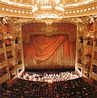

|
¡Aquí puede ir su publicidad!
|
 De interés: Editorial Filomúsica n.89.
De interés: Editorial Filomúsica n.89. |
En portada... |
|
La Revista Filomúsica, tras ocho
años de exitosa andadura, dejó de publicarse en el año 2008. No
obstante, todos sus contenidos se mantienen accesibles en
Internet. La única sección que continúa actualizada aún a día de
hoy es la de Crítica de Conciertos en Madrid. |
LA
REVISTA FILOMÚSICA MANTIENE AL DÍA SUS CRÓNICA DE
Temporada musical
madrileña
Por Víctor Pliego
http://www.profesdemusica.es/filomusica.htm
|
|
Desde nuestros
inicios, mantenemos la filosofía de presentar una publicación
gratuita pero pudiendo competir en contenidos con las revistas de
pago y/o de formato papel, superándolas claramente en visibilidad,
difusión, variedad de contenidos y libertad de ideas. De esta
manera, un artículo publicado en Filomúsica tiene la mayor
repercusión posible. Además, sólo publicamos artículos inéditos
(no publicados en actas de congresos u otras revistas). Todo ello
nos ha llevado a formar parte de las bases de datos de
universidades españolas y norteamericanas. Podemos asegurar sin
temor a equivocarnos que son muy pocos los músicos, musicólogos y
aficionados de habla hispana que no conocen Filomúsica. |
 Compositores-intérpretes e intérpretes. Por
Ángel Carrascosa.
Compositores-intérpretes e intérpretes. Por
Ángel Carrascosa.
Sigo escuchando de vez en cuando a melómanos que se preguntan
cómo es posible que “la mejor versión de tal obra no sea la del
propio compositor”. Esto me reafirma en la opinión de que, en
torno a la interpretación, hay conceptos no se tienen bien
sentados. Me gustaría, por ello, discurrir un poco sobre este
asunto “en voz alta”, es decir delante del teclado del ordenador.
Habrá que comenzar por alguna obviedad: una partitura, que es lo
que nos lega el compositor, no es música: es un papel blanco lleno
de manchitas. La partitura no es música hasta que no suena. |
|
ARTÍCULOS de este mes. |

Historia de la ópera desde sus orígenes hasta los musicales. Por
Ivette Rojas.
Concisa historia
de la ópera que va desde sus orígenes hasta el nacimiento de los
musicales. Ideal para personas que empiezan a escuchar el género y
quieren conocer más de él. Explica porqué se origina de la
tragedia griega y en qué consistía este arte tan importante para
el desarrollo de las artes en general. Luego se hace mención de
los principales compositores de ópera y de sus más importantes
trabajos. |
|
La musicoterapia. La forma o estilo musical como tratamiento en
los desórdenes psicoanímicos. Por Cristina
I. Vargas.
La
musicoterapia es hoy día, objeto de atención y estudio dada su
aplicación en distintos problemas de salud humana de orden
psicoanalítico. Esta revisión incluye un bosquejo histórico
sobre las distintas eras en el desarrollo de las llamadas formas
musicales, la contribución de los grandes compositores en tal
campo y los beneficios que se pueden obtener de algunas de las
formas musicales en la salud humana. |
¿Cómo trabajar la música en Educación Infantil? Por
Natalia López.
La
educación musical es un aspecto muy importante en el desarrollo
infantil, y se puede trabajar desde diferentes enfoques y a través
de infinidad de actividades debido al principio de globalización
de la educación. Esta perspectiva nos indica que no debemos
separar ni jerarquizar las enseñanzas, sino trabajarlas de forma
integral. Por esta razón, al ejercitar la psicomotricidad, por
ejemplo, lo podemos hacer con una actividad al ritmo de algunos
instrumentos musicales. |
|
 La música como parte del aprendizaje educativo. Por
Lucía Díaz.
La música como parte del aprendizaje educativo. Por
Lucía Díaz.
El
aprendizaje ha sido siempre un proceso duro y difícil, tanto
para el maestro/a como para el alumno/a, pero antiguamente no se
disponía de la cantidad de materiales e ideas que hoy día
poseemos nosotros. Antes, la educación se basaba en la
transmisión de conocimientos de forma natural y simple, y hoy en
día, poseemos unas técnicas y unas estrategias que hacen que esa
transmisión sea placentera para el maestro/a. |
 La voz, el canto y el arte de comunicar. Por Cristina
I. Vargas.
La voz, el canto y el arte de comunicar. Por Cristina
I. Vargas.
Una
palabra no comienza como palabra, es un producto final que se
inicia como un impulso o estímulo en la actitud y conducta de los
individuos como necesidad de expresión. La necesidad de nombrar
según Freud, se da gracias a la ausencia y su vez al
reconocimiento del otro (entendiendo “el otro” como lo que está
fuera de mí), esto es lo que hace posible el tránsito a lo humano,
porque el sujeto solo se constituye como tal a partir del símbolo. |
|
 La música en el cine silente y sonoro. Por Cristina
I. Vargas.
La música en el cine silente y sonoro. Por Cristina
I. Vargas.
La música
tiene funciones tales como las de comunicar, entretener y
ambientar. Es por esto y otros factores que se van a señalar más
adelante, que en el cine mudo nace la necesidad de acompañar
imagen con música. El cine se va a iniciar como un género
popular en pequeñas salas, cafés y teatrillos de las ciudades.
Para disimular el ruido que hacían las máquinas de proyección y
para amenizar a la audiencia. |
|
CRÍTICA DISCOGRÁFICA de este mes. |
|
CRÍTICA DE CONCIERTOS. |
|
Exención de responsabilidad: |
La revista delega cualquier responsabilidad (económica, civil,
etc.) sobre los artículos o los archivos publicados en los propios
articulistas o autores.
Diseño
del web, contenido de todas las páginas y marca "Filomúsica"
tienen Copyright (c) 2.000 - Actualidad
Prohibida su reproducción total o parcial sin autorización por
escrito. |